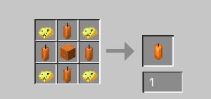

Adds Strangonium Ore, some missing recipes, and more...
Adds the nugget biome in the Nether and liquid chicken and more...
Fabric support for 1.21.8 is here!
Build a portal out of slime and use the igniter to open it... Watch out for the Pokidoty!
Igniter Recipe
For more info, see Guide
Black wood power factor: 2.6
Max Enhancement Enchantment level: 6
By Bob Robertson
Mods made with MCreator